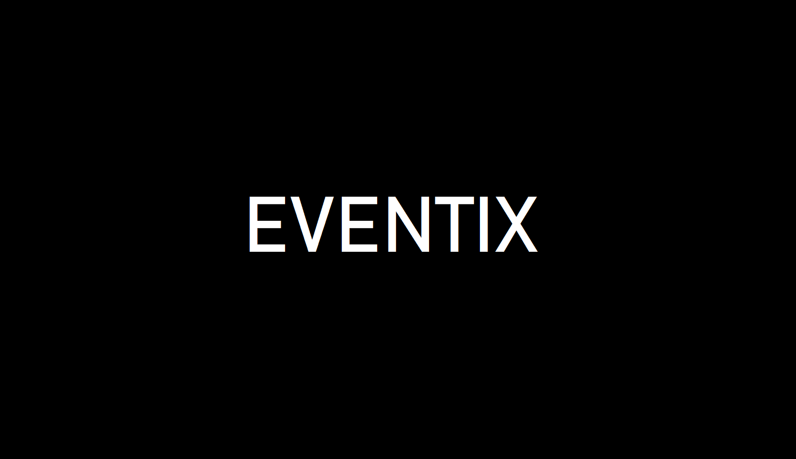

Eventix
Desarrollo plataforma web para la compra venta de entradas para eventos.
La aplicación se llevó a cabo con cuatro integrantes de forma simultanea, simulando un ambiente laboral y haciendo uso de la metodología SCRUM, obteniendo experiencias tanto técnicas como blandas.
Mi participación en el proyecto se ve reflejada en el Back-End.
-Api Rest, donde se obtenían los eventos por web scraping de otra plataforma.
-Filtros combinados.
-Pasarela de pago con criptomonedas a través de Coinbase Commerce.
-Información de los tickets en código QR.
-Notificaciones por e-mail de las compra de entradas QR.
Utilizando las siguientes tecnologías:
JavaScript | Node.js | Express | postgresSQL | sequelize | Puppeteer.js | Coinbase-Commers | Qr-code | Node Mailer
Tecnologías del proyecto:
- FrontEnd:
- React
- Redux
- Stayled-components
- Auth0
- Google Maps
- BackEnd:
- Node.js
- Express
- Puppeteer.js
- Coinbase Commerce
- NodeMailer
- Qr Code
- Database:
- PostgreSQL
- Sequelize
- Control de Versión:
- Git y GitHub
Si le interesa conocer mas de la App puede ingresar haciendo click AQUI.
Y si le interesa ver el codigo puede ingresar haciendo click AQUI.